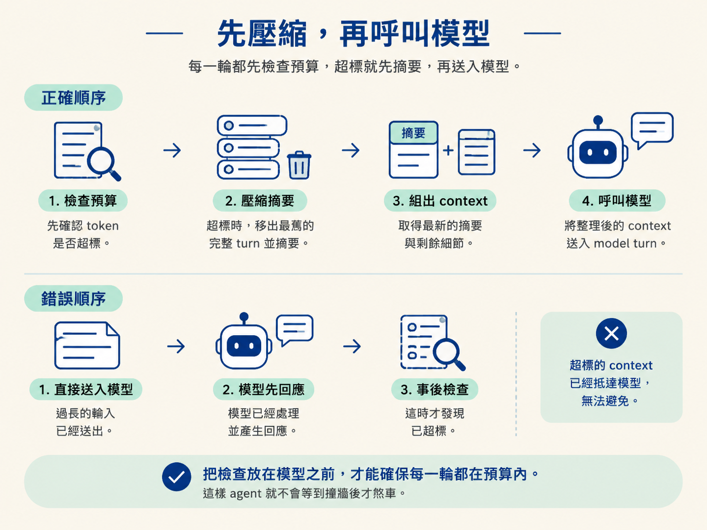
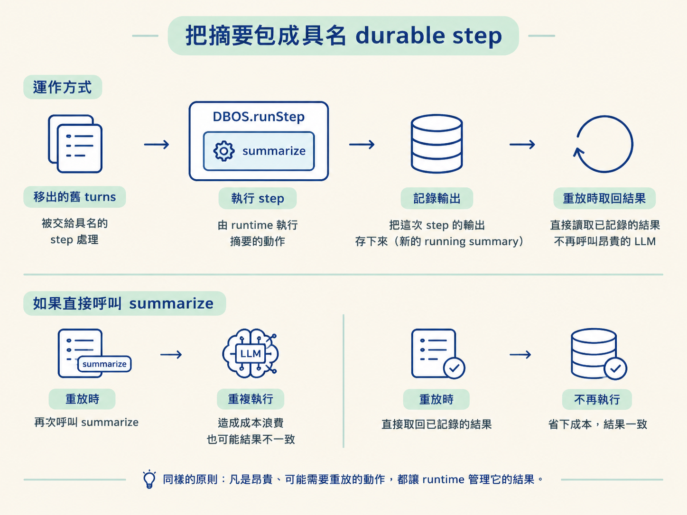

agent 跑得越久，對話內容就會越長；如果等到模型回應後才檢查，過長的 context 早已送出，錯誤也來不及補救。這一步把記憶壓縮接進 runtime：每一輪呼叫模型前先檢查 token 預算，必要時移出最舊的完整 turn、摘要成 State，再用壓縮後的 context 繼續工作。
你會在迴圈開頭、model turn 之前檢查 token 預算；用 while 迴圈移出最舊的完整 turn，而不是拆散 message；把摘要包成 DBOS step，發出 memory_compacted 事件，最後用 buildContext 組出這一輪真正送給模型的內容。
前兩步完成的功能都在 harness/memory.ts。現在把它們 import 進 runtime，並在 agent 迴圈外準備兩個會跨迭代存活的狀態：
import { buildContext, summarize, estimateTokens, maxTokens, keepContextTokens } from "./memory";
let turns: ModelMessage[] = []; // 還沒被壓縮的完整 turn
let summary = ""; // 累積中的 running summary（State）| 狀態 | 型別 | 它代表什麼 |
|---|---|---|
turns | ModelMessage[] | 最近、還沒被摘要的完整往返，是細節的來源 |
summary | string | 已被壓縮的舊內容結晶，是歷史的來源 |
summary 必須宣告在迴圈外面。每次壓縮都要把新的摘要和舊摘要接在一起，才能形成持續累積的 running summary，也就是第三步所說的「摘要的摘要」。
課程也會把允許的步數調大，讓 agent 有足夠時間跑久一點，實際觸發壓縮，而不是只在理論上看見它。
這是整套機制最重要的順序：每一輪迴圈一開始就檢查與壓縮，接著才呼叫模型。
會爆掉的地方是 model turn。如果等模型回應完才檢查，過長的輸入已經送出；把檢查放在前面，超標的 context 根本不會抵達模型。
while (true) {
// 1. 先量、先壓縮（模型還沒被呼叫）
if (estimateTokens(turns) > maxTokens) {
// 見下方的滑動視窗
}
// 2. 用壓縮後的內容組出這一輪的 context
const context = buildContext(systemPrompt, task, summary, turns);
// 3. 才呼叫模型
const turn = await modelTurn(context);
turns.push(...turn.response.messages);
}這段順序讓每一次 model turn 都先通過預算檢查，再拿到最新的摘要與剩餘細節。agent 不會等到撞牆後才煞車。

需要壓縮時，從 turns 的前面移出最舊內容，放進 old，直到估算 token 數降到 keepContextTokens 以下：
const old: ModelMessage[] = [];
while (turns.length > 0 && estimateTokens(turns) > keepContextTokens) {
old.push(turns.shift()!); // 一次移出「一整個 turn」
}這裡的原子單位是 turn，不是單一 message。因為 messages 陣列有結構：tool call 後面必須接著對應的工具回應。只刪掉其中一邊，就像把電話線剪掉一半，陣列會留下懸空的工具呼叫，API 可能直接拒收。
| 單位 | 一次移出什麼 | 結果 |
|---|---|---|
| message | 單一則訊息 | 可能留下懸空 tool call，API 報錯 |
| turn | 一整組完整往返 | 邊界維持合法，陣列不會被拆壞 |
一個 turn 包含：使用者輸入文字、由它觸發的工具呼叫，以及所有對應的回應訊息。因此滑動切在完整循環之間，最近的內容留下來，較舊的完整 turn 則交給摘要。
移出的 old 不能直接丟掉。摘要通常需要一次昂貴的 LLM 呼叫，因此要用 DBOS.runStep 包起來，並提供固定名稱：
if (old.length > 0) {
summary = await DBOS.runStep(
() => summarize(old, summary),
{ name: "summarize-turns" },
);
// 重算、重建、發事件
const after = estimateTokens(buildContext(systemPrompt, task, summary, turns));
await bus.emit({
type: "memory_compacted",
workflowId: DBOS.workflowID,
summarizedTurns: old.length,
tokens: after,
summary,
});
}為什麼不是直接呼叫 summarize？因為普通程式碼在流程中斷、工作流重放時，可能再次呼叫 LLM。這不只浪費成本，還可能得到不同結果，讓後續狀態對不上。
包成具名 step 後，DBOS 會記錄它的輸出。重放時直接取回之前的結果，不必重新執行。這和前面把 model turn、tool call 包成 step 是同一個原則：凡是昂貴、可能需要重放的動作，都讓 runtime 管理它的結果。

memory_compacted 留下可追蹤的紀錄壓縮代表模型之後看不到部分原始細節，因此不應該默默發生。壓縮完成後發出 memory_compacted 事件，讓使用者與開發者都知道記憶何時被整理過：
workflowId：發生壓縮的工作流，方便在 event log 中追蹤。summarizedTurns：這次移出並摘要了幾個 turn。tokens：壓縮後的 token 數，確認預算確實降下來。summary：摘要內容，用來檢查關鍵事實是否保留。這個事件同時服務三種需求：使用者知道歷史被摘要了，開發者能確認壓縮是否照預期發生，未來排查問題時也能檢查摘要品質。它沿用既有的 durable bus，因此和其他事件一樣會寫進 event log。
buildContext 跑這一輪摘要完成後，不能只把 turns 原封不動送給模型，而要用 buildContext 重新組出 context。這樣剛更新的 summary 才會被注入，模型才知道較早以前發生過什麼。
const context = buildContext(systemPrompt, task, summary, turns);
const turn = await modelTurn(context);
// 這一輪的回應也要回到 turns 裡，未來才能整 turn 壓縮
turns.push(...turn.response.messages);最後的 push 很容易漏掉，卻是循環能繼續運轉的關鍵。模型回應也是這個 turn 的一部分；不放回 turns，下一次滑動就找不到完整往返，切點也無法對齊。
所以每一輪固定走這條路：先量、必要時壓縮、組 context、跑模型、把完整 turn 收回去。跑完這一輪，你已經能在 event log 中看到是否真的發生 memory_compacted，也能用事件內的 token 數確認預算是否降下來。
課程也調整了 system prompt，要求 agent 一次處理一個項目，四個步驟都完成後才換下一個，全部完成後再簡短總結。這不是通用的業界最佳實務，而是刻意讓 token 快速成長，好在短時間內觸發壓縮。真實部署時，這段提示可能完全不需要。
這裡真正要記住的不是「prompt 必須這樣寫」，而是：prompt 會直接改變 token 的成長曲線，因此也是調整預算與觸發壓縮時機的一個槓桿。